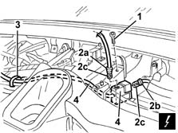

5580M84 navigation system mount junction unit - r r
- Path
- Procedures > 55 ELECTRICAL EQUIPMENT > 5580 SPECIAL ACCESSORIES > 5580M om-board navigator > 5580M84 navigation system mount junction unit - r r
- Kind
- repair procedure (removal / refitting; the operation number is the code)
- Applies to
- all engines; all production periods
- Interactive page
- https://sloeber94.github.io/elrnDB-fMltpl/en/#/2892002
Applies to: all engines; all production periods
 Removing
Removing
 Refitting
Refitting5580M14 positionable navigation system panel - r r
7040A09 passenger air bag compartment cover - r r
2125C24 gear lever knob - r + r
7065C10 air conditioning control panel - r+r
7040A11 control panel lid - r + r
5560B10 analogue control panel - r+r
7040A77 glass holder on facia trim - r r
7010M16 rear electric window enablement switch - r+r
7040A96 facia glove compartment flap (1) lh or rh - r r (right and left)
5580C26 LOCK BARREL KEY/SWITCH for deactivating passenger 'AIR BAG - R.R.
7040A44 facia lh side cover - r r
7040A45 facia rh side cover - r r
7040A25 central facia trim - r r
1. Undo the bolt fixing the junction unit.
2. Disconnect the electrical connections (2a, 2b), adjusting the retainers (2c).
 | Name | Connector |
|---|---|---|
2b | Navigation system display |
3. Disconnect the band from the bridge for the junction unit.
4. Remove the junction unit and bridge.

Applies to: all engines; all production periods
Refitting
RemovingCheck that the junction unit is not damaged.
Connect the band to the junction unit bridge.
Connect the electrical connections .
Tighten the bolt fixing the junction unit.
7040A25 central facia trim - r r
7040A45 facia rh side cover - r r
7040A44 facia lh side cover - r r
5580C26 LOCK BARREL KEY/SWITCH for deactivating passenger 'AIR BAG - R.R.
7040A96 facia glove compartment flap (1) lh or rh - r r (right and left)
7010M16 rear electric window enablement switch - r+r
7040A77 glass holder on facia trim - r r
5560B10 analogue control panel - r+r
7040A11 control panel lid - r + r
7065C10 air conditioning control panel - r+r
2125C24 gear lever knob - r + r
7040A09 passenger air bag compartment cover - r r
5580M14 positionable navigation system panel - r r
Carry out the satellite navigator 'Menù Test' ( 5580M om-board navigator ).
Topics linked from this page (18)
- 5580M om-board navigator
- 2125C24 gear lever knob - r + r
- 5560B10 analogue control panel - r+r
- 5570T80 car radio unit - r+r
- 5580C26 LOCK BARREL KEY/SWITCH for deactivating passenger 'AIR BAG - R.R.
- 5580M14 positionable navigation system panel - r r
- 7010M16 rear electric window enablement switch - r+r
- 7040A09 passenger air bag compartment cover - r r
- 7040A11 control panel lid - r + r
- 7040A25 central facia trim - r r
- 7040A37 fuse box cover - r r
- 7040A44 facia lh side cover - r r
- 7040A45 facia rh side cover - r r
- 7040A77 glass holder on facia trim - r r
- 7040A96 facia glove compartment flap (1) lh or rh - r r
- 7065C10 air conditioning control panel - r+r
- 7065C42 ashtray (one) r+r
- E65 Navigation system display